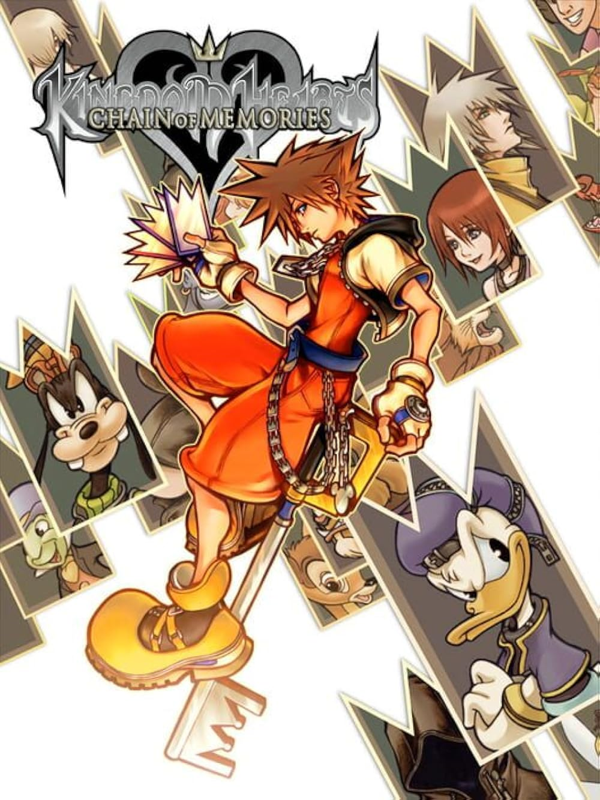
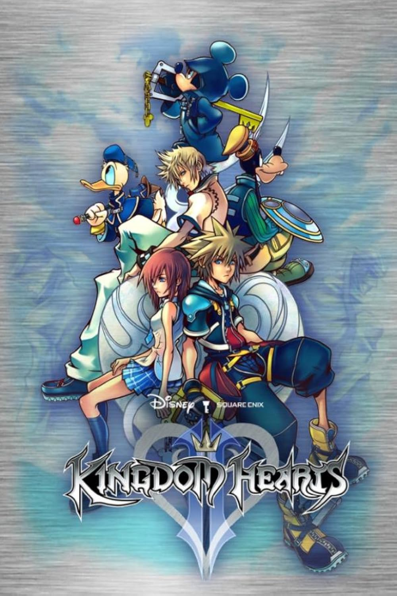
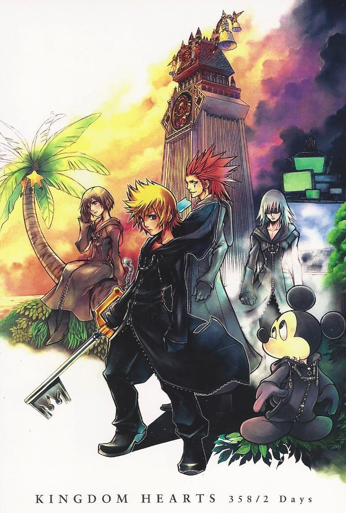
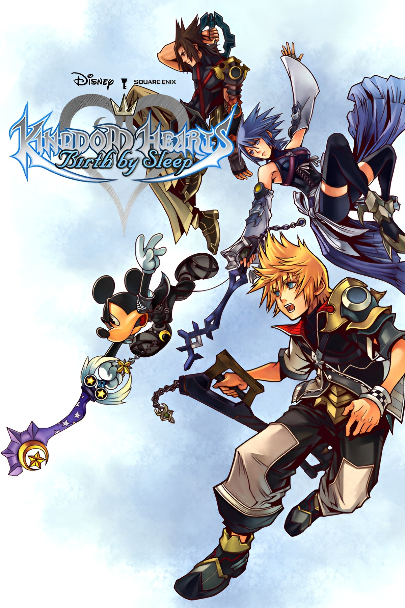
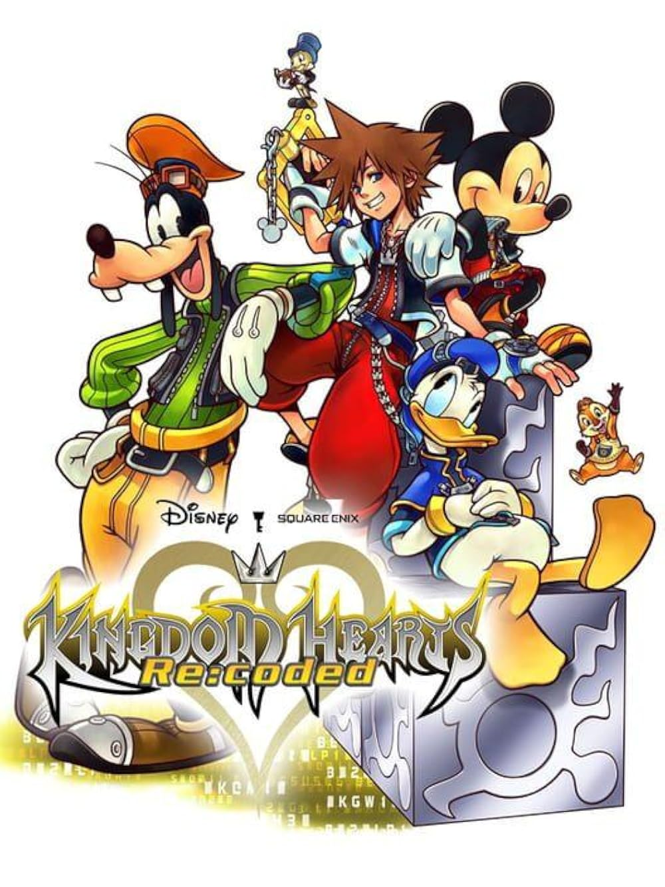
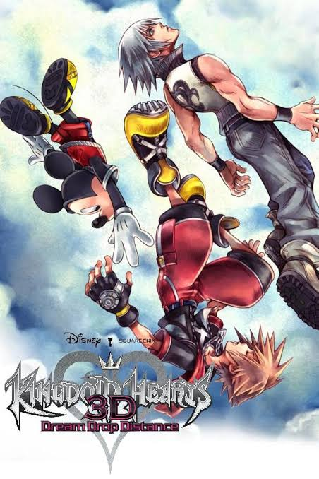
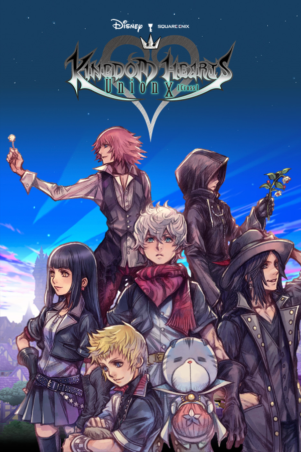
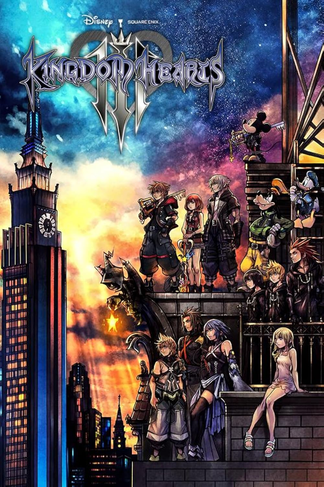
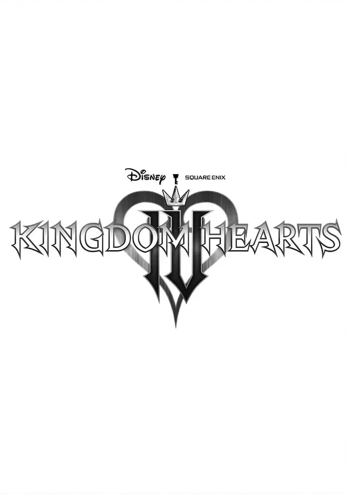

Kingdom Hearts
El inicio de la aventura. Sora, Riku y Kairi ven cómo su mundo cambia para siempre cuando la oscuridad los alcanza.

Trece capítulos separados por épocas, generaciones y años de espera, pero unidos por la misma pregunta: ¿qué hay del otro lado de la oscuridad? Desde el primer viaje de Sora hasta las historias que todavía no se cuentan del todo, cada entrega suma una pieza más a un mismo camino.
El inicio de la aventura. Sora, Riku y Kairi ven cómo su mundo cambia para siempre cuando la oscuridad los alcanza.

Sora llega a un misterioso castillo donde cada piso parece guardar un recuerdo. Mientras avanza, deberá descubrir qué está dispuesto a perder para recuperar lo que olvidó.

Tras un largo sueño, Sora despierta para enfrentarse a una nueva amenaza: los Incorpóreos y la misteriosa Organización XIII.

Roxas se une a la Organización XIII y comienza a descubrir el significado de su existencia. Entre misiones y recuerdos, su amistad con Axel y Xion cambiará para siempre su destino.

Años antes de la historia de Sora, tres portadores de la Keyblade emprenden caminos separados. Terra, Aqua y Ventus deberán enfrentarse a una oscuridad que amenaza con cambiar el destino de todos.

Un mensaje oculto dentro del diario de Jiminy Cricket revela que algo está mal. Para descubrir qué ocurrió, un Sora digital deberá recorrer nuevamente los mundos conocidos.

Sora y Riku se preparan para convertirse en Maestros de la Keyblade. Para conseguirlo, deberán atravesar mundos adormecidos mientras una nueva amenaza comienza a revelar sus verdaderos planes.

Mucho antes de Sora, los portadores de la Keyblade luchaban por proteger la luz. Una antigua profecía anuncia una guerra que cambiará para siempre el destino de los mundos.
Aqua continúa atrapada en el Reino de la Oscuridad, buscando una salida. Su recorrido revela lo que ocurrió durante los años que separaron Birth by Sleep de la historia de Sora.

La culminación de la saga del Buscador de la Oscuridad. Las fuerzas de la luz se preparan para la batalla final.
Los recuerdos de Sora se convierten en un nuevo viaje a través de momentos conocidos de la saga. Mientras Kairi busca respuestas, la música se convierte en el camino para reconstruir la historia.

Próximamente. El próximo capítulo aún está por escribirse. Sora despierta en Quadratum, mientras un nuevo misterio comienza a tomar forma.